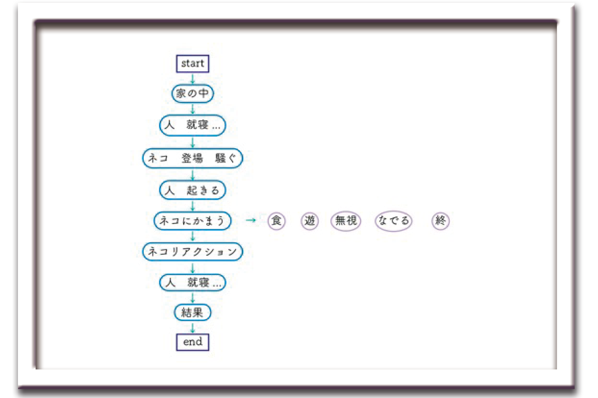
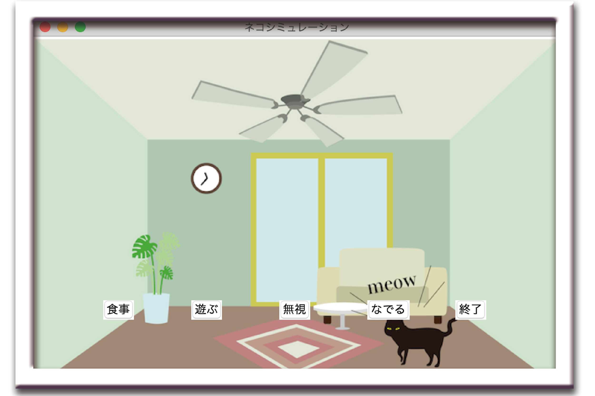
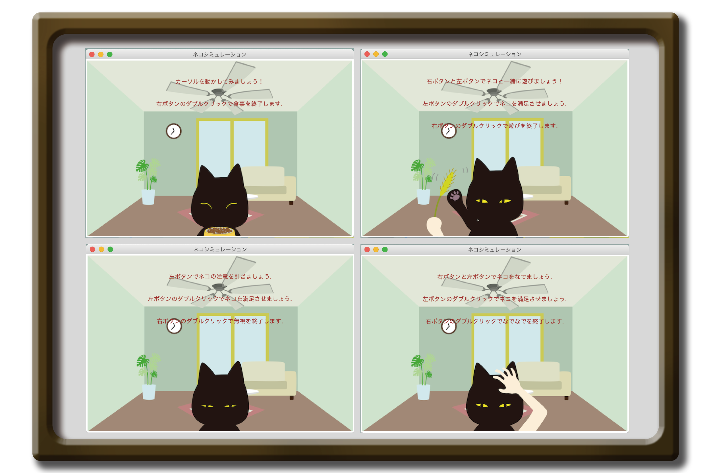
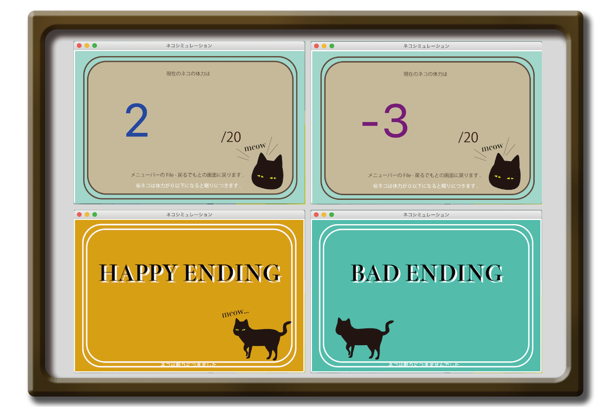

猫の日常
2020/1/8-2020/1/31
Programming
飼い主を悩ます猫の夜の運動会の事例を紹介するミニゲームです。
Python Illustrator

フローチャート
猫が騒ぐのを落ち着かせるゲームです。 プレイヤーが眠ろうとすると猫が騒ぎ出しプレイヤーは目を覚まします。 プレイヤーは猫と一緒に遊んで猫が騒ぐのをやめて眠るようにします。 ボタン操作でストーリーが進んでいきます。



Rule
飼い主が電気を消して寝ようとすると猫が騒ぎ出し猫の夜の運動会が始まります。 食べ物をあげると体力がー２、一緒に遊ぶと−５、無視すると＋２、撫でると−３ 変動します。猫の初期の体力は20で、一緒に遊んで猫の体力をなくし体力が 0以下で猫が眠りにつくとハッピーエンド、体力が0以上で猫に体力が余ったまま終わってしまうと バッドエンドとなります。

©️ 2021 Koyuki Saito